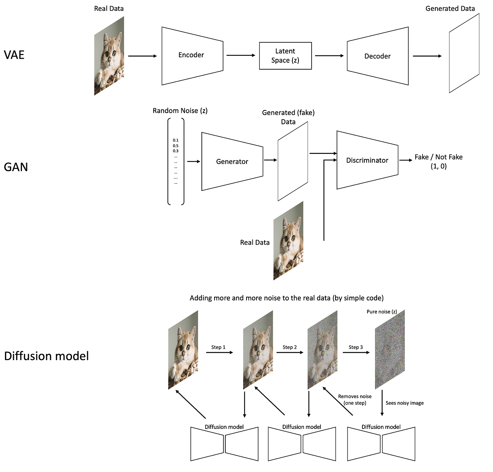
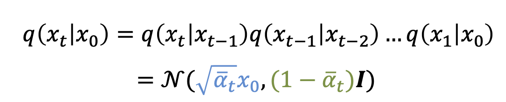
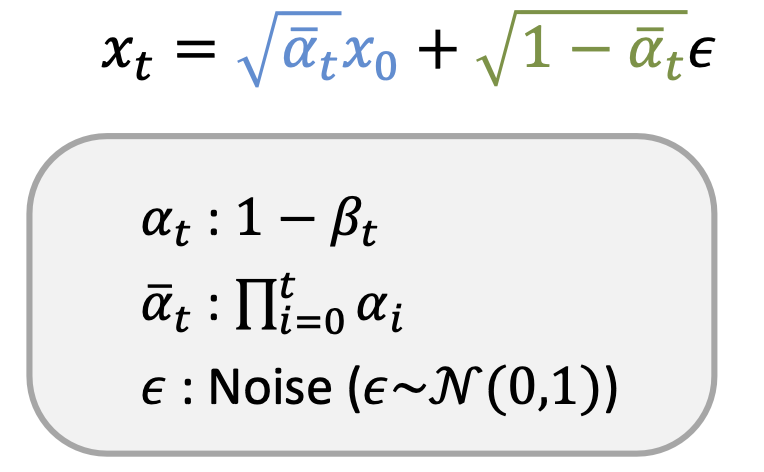
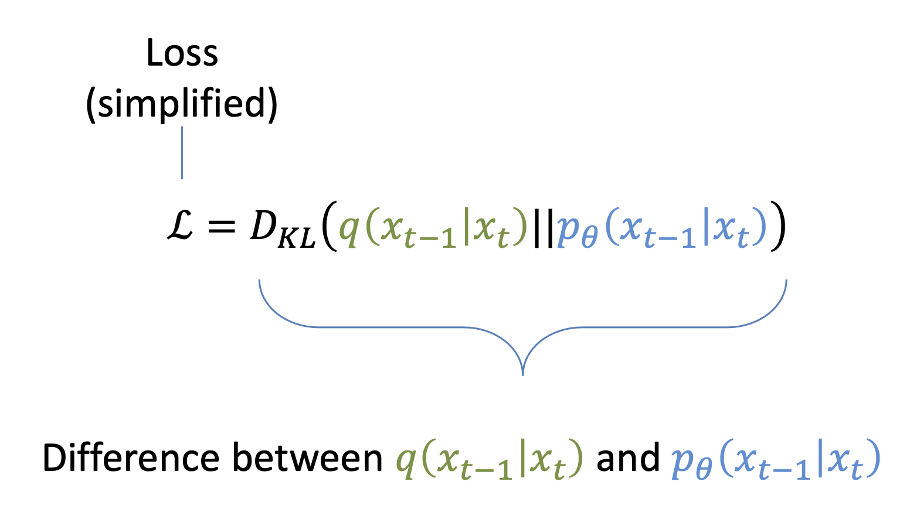

Diffusion Model
이번시간에는
image generation에서
가장 기술이 좋은 현재 많은
Image generation AI 회사들이
사용하는
Diffusion model에 대해서 알아보자.
기존의 이미지 생성모델은 VAE, GAN이 있었고,
이전 포스터들에서 다루었다.
결론적으로 말하면, diffusion model 이 가장 성능이 좋아서,
실제 산업군에는 diffusion model을 사용한다.

VAE vs GAN vs Diffusion Model
DIffusion model process에 대해서 자세하게 들어가보자.
(다소 복잡함.)

일단 시작은 강아지 사진에서부터 시작한다.
1.강아진 사진 -> Noise 로 만드는 forward process
이 과정을 바탕으로 우리의 최종목적인
2. noise -> 강아지사진. denoising process
를 달성할 수 있다.
다시 말하지만, 우리의 최종 목적은
noise -> 원하는 사진 만들기 이다.
자 그러면 정확히 어떻게 1번 과정을 바탕으로
2번 과정(우리의 목적)을 실행할 수 있는지 알아보자.
1번 과정부터 자세하게 들어가보자.
일단 큰 틀은 T개의 sequence로 작업을 순차적으로 진행하고,
각 작업에서 특정한 Noise를 계속해서 더해준다.

여기서 정확히 말하면, 단계별로.
'Guassian Noise'
를 더해준다.

gaussian noise adding process.
Guassian Noise(e) 란
N(0, β_t * I)의 확률분포를 따르는 값 중에서
하나 random 한 값이다.

forward process equation.
위 식을 보면, 이전 그림(x_t-1)을 root(1- β_t) 만큼 scale down하고,
random 한 Guassian Noise를 더해준 것이
Forward process 한단계 후의 그림이다.
여기서 계속 강조하였지만, 랜덤한 노이즈가 더해진다.
따라서, x_t가 사실상 정해진 값이 아니라 process에 따라서
다른 값이므로, forward process과정을
확률로 표현한 것이다.
random한 노이즈로부터 확률의 개념이 생겼으므로,
분산 = β_t * I
평균은 forward process equation
을 통해 다음과 같음을 알 수 있다.

이제 이 스탭을 쭉 진행해주자.

각 확률이 독립시행이므로, x_0(처음사진)에서 최종 노이즈가 될 확률은 다음과 같다.


여기서 alpha는 다음과 같이 정의됨을 알 수 있다.

forward process에 대해서 알아보았으니,
이제 진짜 목적인 denoising(reverse) process에 대해서
알아보자.
큰틀은, forward process와 반대로,
한 step씩, 노이즈를 제거하는 과정을 거친다.
[최적의 reverse process란?]
가장 완벽하게 reverse process한 것은
결국에 forward process에서와
동일한 사진 변환 확률을 가지는 경우이다.
(동일한 확률분포의 노이즈)

(조금 말이 어렵지만 한번 들어가보자)
x_t 사진에서 어떠한 노이즈를 제거하여, x_t-1을 만들 것이고,
그 '노이즈' 가 위의 forward proces처럼
특정 확률분포를 띄어야지만,
우리가 forward process에서의 변환전 사진 x_t-1과
최대한 비슷한 사진을 reverse process에서 얻을 수 있다.
여기서, reverse process의 확률은 학습하는 parameter이고,
각 step에서의 확률분포가 forward일때와 비슷하도록
loss function을 다음과 같이 정의한다.

이를 다르게 표현하면, 결국
제거하는 노이즈가, 아까 더하였던 노이즈와 최대한 비슷해야한다는 것이다.

다시 종합해서 말하면,
forward process에서 더했던 노이즈를
정확히 찾아내는 과정이 바로, 학습 과정이다.